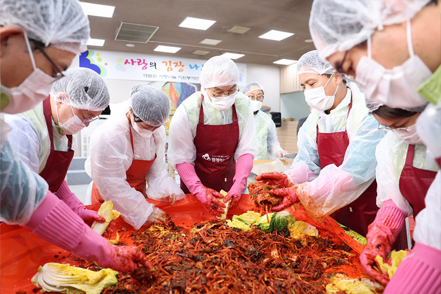
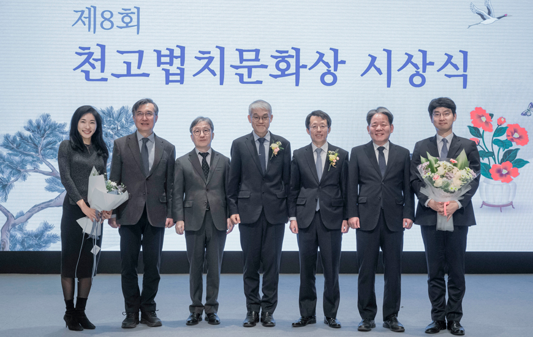
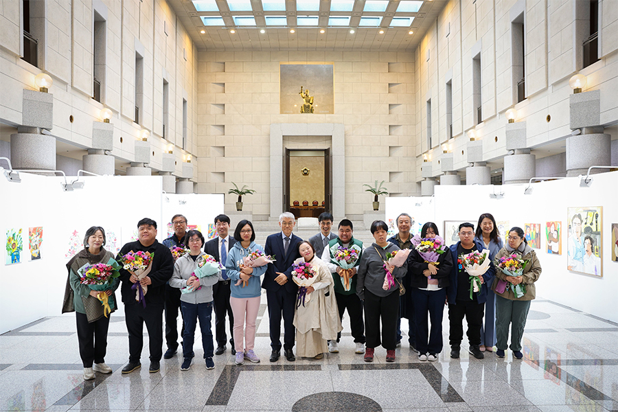
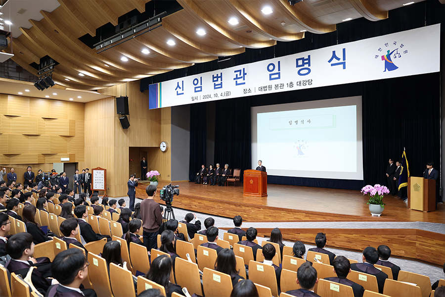
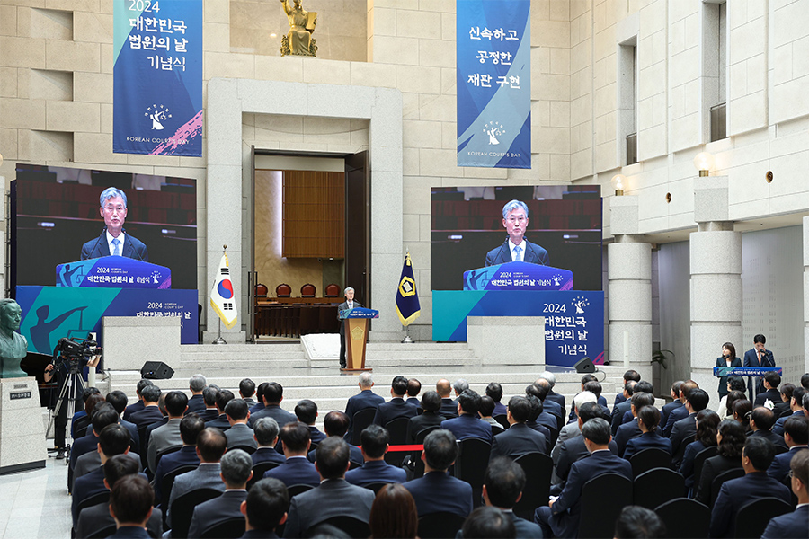
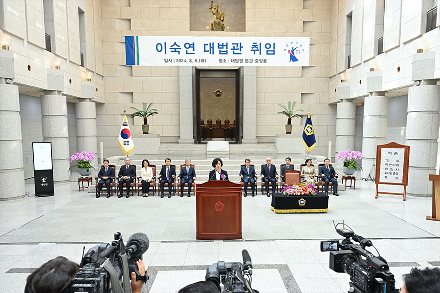
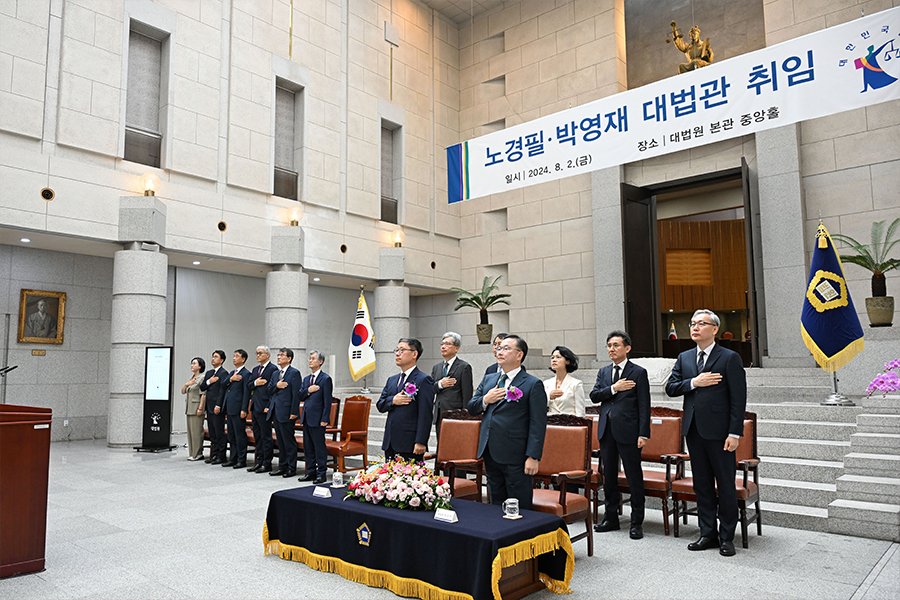
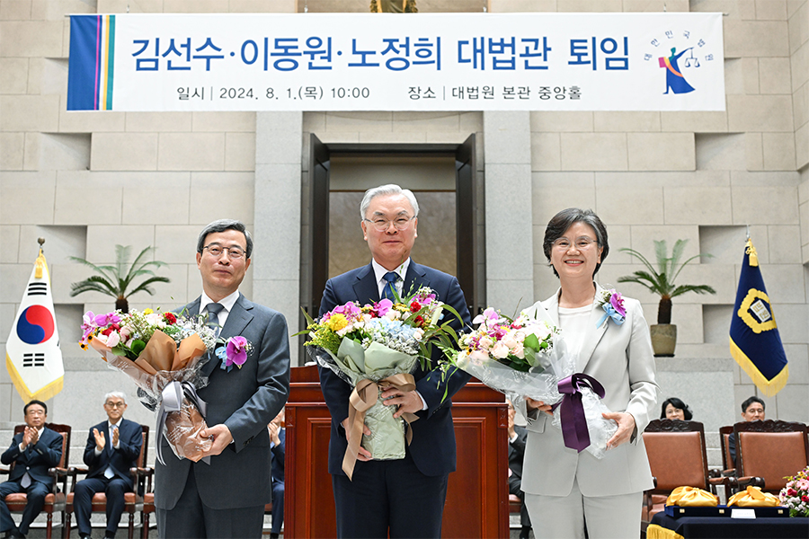

News
소 식
| 번 호 | 제 목 | 작 성 일 |
|---|---|---|
| 001 | 피고인 조○ 외 4 뇌물수수 사건에 관한 판결선고 | 2024-11-29 |
| 002 | [대법관회의] 2024년 제11회 대법관회의 결과 요지(의결 제63호, 제64호) 안내 | 2024-11-21 |
| 003 | [대법관회의] 2024년 제11회 대법관회의 결과 요지(의결 제59호 ~ 제62호) 안내 | 2024-11-21 |
| 004 | [대법관회의] 2024년 제11회 대법관회의 결과 요지(의결 제55호 ~ 제58호) 안내 | 2024-11-21 |
| 005 | [대법관회의] 2024년 제11회 대법관회의 결과 요지(의결 제51호 ~ 제54호) 안내 | 2024-11-21 |
| 006 | 제35기 영블로거위원회 공개 모집 | 2024-11-19 |
-

대법원 사랑나눔 자원봉사단 사랑의 김장 나누기 봉사활동
2024-11-27
대법원 사랑나눔 자원봉사단 사랑의 김장 나누기 봉사활동
2024-11-27
대법원 사랑나눔 자원봉사단은 2024년 11월 27일(수) 15:00 대법원 2층 국화식당에서 '사랑의 김장 나누기' 봉사활동을 하였습니다.
봉사활동은 김장 담그기, 김장 김치 및 기부 물품 전달식으로 진행되었으며 61명의 봉사단원들은 김장 담그기, 김치 포장, 운반조로 편성되어 분주한 손놀림과 움직임으로 박스 당 10kg, 50박스의 김장김치를 직접 만들어 서울 영등포구에 소재한 장애인 보호시설 '모랫말꿈터'에 기부 물품과 함께 전달하였습니다. -

양형위원회 천고법치문화상 수상
2024-11-20
양형위원회 천고법치문화상 수상
2024-11-20
양형위원회(위원장 이상원)는 2024. 11. 20.(수) 오후 6시 포스코센터 아트홀에서 천고법치문화재단(이사장 송종의)이 수여하는 제21호 천고법치문화상을 수상하였습니다. 천고법치문화상은 비영리 공익법인인 천고법치문화재단에서 2015년부터 매년 법치주의의 확립에 기여한 개인이나 단체를 선정해 수여하는 상입니다. 천고법치문화재단 송종의 이사장은 인사말을 통해 “대법원의 양형위원회는 17년 전에 출범한 이후 법원 판결의 앞길을 환히 밝혀주는 횃불을 높이 들어 올렸습니다. 지금도 밝게 빛납니다. ··· 그 횃불을 더 높게 들어 올려서 더 밝게 비치도록 해주십시오. 이번 수상이 모든 국민에게 사법부의 판결에 대한 전폭적인 신뢰를 심어주는 계기가 될 것이라고 확신합니다.”라고 양형위원회의 수상 취지를 밝혔습니다. 안철상 전 대법관은 축사에서 “오늘날 우리는 점점 심해지는 갈등과 혼란 속에서 국가와 사회의 질서를 지키는 법치주의의 소중함을 다시금 실감하고 있습니다. ··· 천고법치문화상 시상식은 법치주의를 지켜온 분들에 대한 경의를 표하는 뜻깊은 자리입니다. ··· 대법원 양형위원회는 객관적이고 공정한 양형기준을 수립하여 범죄와 처벌에 대한 사법부에 대한 신뢰를 높이고 있습니다. 법과 그에 따른 형벌의 공정한 행사를 하기 위해서는 양형기준의 확립이 중요합니다.”라고 말했습니다.
-

발달장애인 작가 미술작품 전시회
2024-11-12
발달장애인 작가 미술작품 전시회
2024-11-12
포토뉴스 게시판 상세정보 표 제목 발달장애인 작가 미술작품 전시회 날짜 2024-11-12 ■ 발달장애인 작가 미술작품 전시회 “Amazing Outsider : 展” 안내 일정: 11월 12일(화) ~ 11월 14일(목), 3일간 장소: 2층 대법정 앞 중앙홀 참여 작가: 양평 발달장애인 창작자 단체 ‘어메이징 아웃사이더’ 소속 작가 10인
-

신임법관 임명식
2024-10-04
신임법관 임명식
2024-10-04
대법원은 2024년 10월 4일 오후 2시, 대법원 1층 대강당에서 신임법관 111명에 대한 임명식을 거행하였습니다. 신임법관 111명은 2024년 10월 7일부터 2025년 2월 21일까지 사법연수원에서 깊이 있는 사고훈련과 판결문 작성 등 법관으로서의 역량과 덕목 함양을 위한 신임법관 연수를 받은 후 2025년 2월 24일 각급 법원에 배치될 예정입니다.
-

대한민국 법원의 날 기념식 개최
2024-09-13
대한민국 법원의 날 기념식 개최
2024-09-13
대법원은 2024년 9월 13일 대한민국 법원의 날을 맞이하여 오전 11시부터 대법원 2층 중앙홀에서 기념식을 진행하였습니다.
-

이숙연 대법관 취임식
2024-08-06
이숙연 대법관 취임식
2024-08-06
2024년 8월 6일(화), 대법원 중앙홀에서 이숙연 대법관의 취임식이 있었습니다.
-

노경필, 박영재 대법관 취임식
2024-08-02
노경필, 박영재 대법관 취임식
2024-08-02
2024년 8월 2일(금), 대법원 중앙홀에서 노경필, 박영재 대법관의 취임식이 있었습니다.
-

김선수, 이동원, 노정희 대법관 퇴임식
2024-08-01
김선수, 이동원, 노정희 대법관 퇴임식
2024-08-01
2024년 8월 1일(월), 대법원 중앙홀에서 김선수, 이동원, 노정희 대법관의 퇴임식이 있었습니다.
| 번 호 | 제 목 | 작 성 일 |
|---|---|---|
| 1598 | 공직선거법위반등 사건(2024도14456) 보도자료 | 2024-11-28 |
| 1597 | 특정범죄가중처벌등에관한법률위반(알선수재) 사건(2024도14048) 보도자료 | 2024-11-28 |
| 1596 | 손해배상(자) 사건(2021다255853) 보도자료 | 2024-11-21 |
| 1595 | 위증 사건(2024도13347) 보도자료 | 2024-11-20 |
| 1594 | 특정범죄가중처벌등에관한법률위반(도주치사)등 사건(2024도12830) 보도자료 | 2024-11-20 |